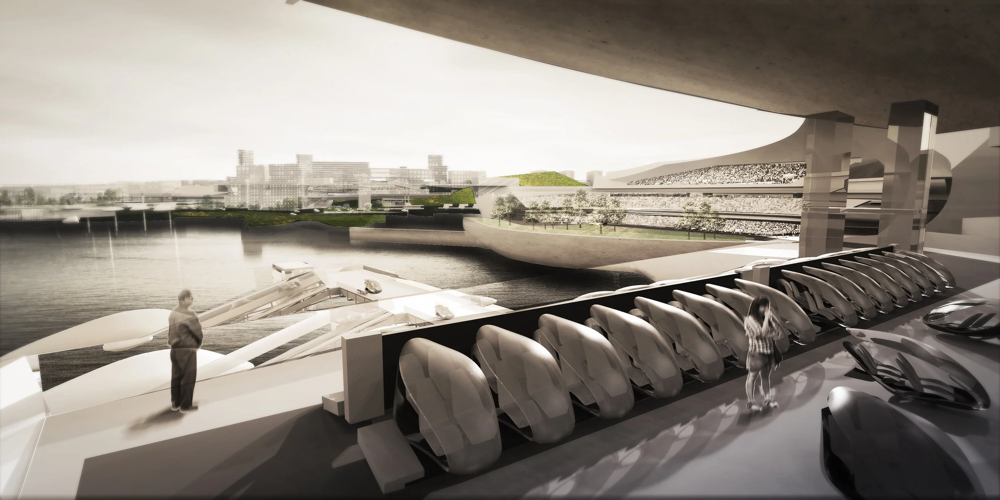
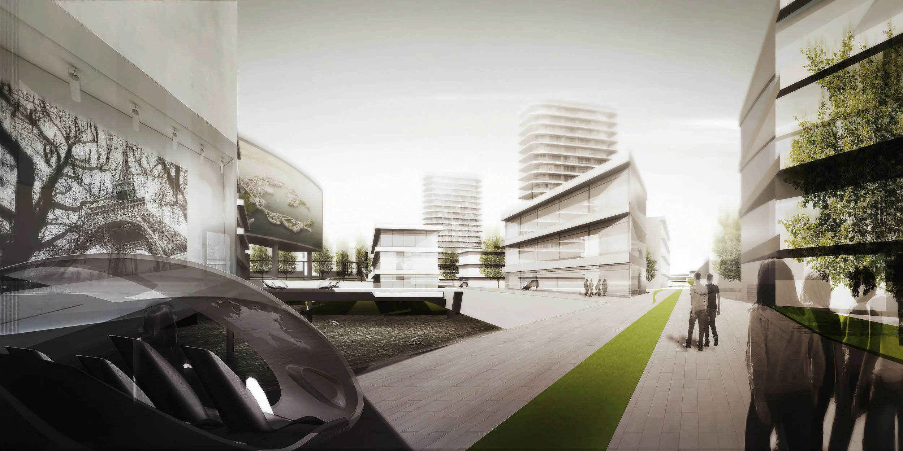

The South Sea Pearl Studio speculates about the possibility of self-sustainable urbanism that balances and integrates the aims of culture, nature and business to reclaim the importance of intelligent ecology in 21st century urbanism.
Looking at individual small towns and city-states that arose throughout history—from Greek city-states, such as Miletus and Samos, to the towns populating the Roman Empire, to the Renaissance fortress city of Palmanova—it is notable that each of these urban systems were developed with a degree of autonomy and independence that is impossible in today's globalized era of the nation-state. For centuries, towns and city-states developed idiosyncratically, as micro engines of cultural, agricultural and social sustainability; their often remote locations and distinctly defined urban boundaries led to highly specific architectural, urban, economic, and social considerations as each culture addressed the questions unique to its own advancement.


Now, China is poised to inherit this legacy by constructing a 290 hectare island that will become a laboratory and demonstration project of urban sustainability in Hainan, China. Studio targets the issue from five approaches: floating landscape, Archipelago, Infrastructure Urbanism, Extreme man-made urban environment, and the pods.
I. Floating Landscape
Team: Dunia Abu Shanab, Deborah Liu, Jihun Son
Land Reclamation is the number one enemy to many living organisms and the eco-system we live in. Meanwhile, artificial islands has proven to be a popular development ideal for many developers seeking to invent a new world. The conflict between these two issues brings about the concept for floating landscapes, which suggest zero reclaimed land while constructing an artificially floating island. With a small environmental footprint the islands can work to enhance the eco-system, while creating a new ecology of its own.
II. Archipelago
Team: Niloufar Golkar, Pegah Koulaeian, Sara Jafarpour
The proposed is a natural floating island chain that challenges the ecology of the ocean through the lens of programming and differentiating between passive and active water ponds. We wanted to explore different notions of recreations which the landscape within each island follows a piazza format. The big organizational strategy is the main island clusters and the pedestrian and bike bridges that work as a secondary connection in our island.
III. Infrastructure Urbanism
Team: Barak Kazenelbogen, Luyan Shen, Yake Wang
The Hainan south sea pearl man-made island provides a unique opportunity for architects and urban designers; no context, no history and no land — a carte blanche. Such an unique opportunity allowed us to explore the fundamentals and necessities of the urban environment in our search to create a non-conformist multi-layered island experience.

IV. Project X
Team: John Paul Salcido, Kevin Sherrod
Haikou is on the northern edge of the torrid zone, and is part of the Intertropical Convergence Zone. April to October is the active period for tropical storms and typhoons, most of which occur between August and September. May to October is the rainy season with the heaviest rainfall occurring in September. Despite its location, the city has a humid subtropical climate, falling just short of a tropical climate, with strong monsoonal influences.
V. Pods
Team: Baocheng Yang, Ran Israeli
The island is a purpose for a platform that suits a dynamic, ever-changing urban environment. It takes the sometimes fixed and unfixable master plan and breaks it down into small fragments that change in scale and program. By doing so, the small fragments, pods, can use the water of the island as infrastructure and to be dynamic. Moreover, it changes the common conception of what is moving and what is fixed in the urban fabric.